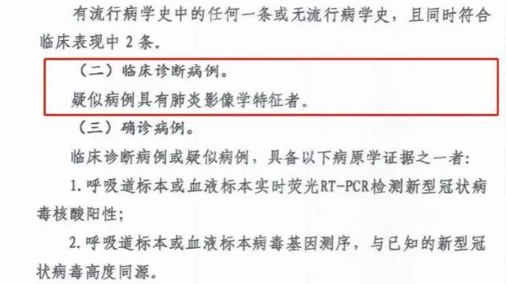

为何湖北一天新增1.4万新冠肺炎确诊病例？
原文链接 备份链接 *************▲*************2月2日，武汉大学中南医院影像科主任徐海波教授（白衣者）和同事查看患者的CT检查影像。 （新华社/图） 全文共1150字，阅读大约需要3分钟。 武汉确诊患者单日 …

2月12日0时-24时，湖北省新增新冠肺炎病例14840例(含临床诊断病例13332例)。
为何一天激增上万例？什么是临床诊断病例？为何将临床诊断病例数纳入确诊病例数进行公布？临床诊断病例去哪里？怎么治？

为何一天激增上万例？
2月11日0时-24时，湖北省新增新冠肺炎病例1638例。为何2月12日新增新冠肺炎病例一下子上涨到了14840例？
原因就是，湖北将临床诊断病例数纳入了确诊病例数。
什么是临床诊断病例？
国家卫生健康委办公厅、国家中医药管理局办公室日前印发《新型冠状病毒感染的肺炎诊疗方案（试行第五版）》，在湖北省的病例诊断分类中增加了“临床诊断”，以便患者能及早按照确诊病例接受规范治疗，进一步提高救治成功率。
根据第五版诊疗方案的表述，疑似病例具有肺炎影像学特征者，为临床诊断病例。

而且，“疑似病例”标准修改为：无论有没有流行病学史，只要符合“发热和/或呼吸道症状”和“发病早期白细胞总数正常或降低，或淋巴细胞计数减少”这2条临床表现，便可考虑为疑似病例。相当于疑似病例标准放宽了。
湖北卫健委表示，根据该方案，近期湖北省对既往的疑似病例开展了排查并对诊断结果进行了订正，对新就诊患者按照新的诊断分类进行诊断。为与全国其他省份对外发布的病例诊断分类一致，从今天起，湖北省将临床诊断病例数纳入确诊病例数进行公布。
为什么要纳入临床诊断病例？
中国疾控中心流行病学首席科学家曾光对媒体解释称，“临床诊断病例”就是实验室还没确诊，还没有查到核酸检测阳性，只是临床症状“看着像”。
曾光表示，这种“迟迟不呈现阳性”的病人确实存在，又不能排除，因此很容易在社会上传播，把这些人纳入新增病例，就可以对他们采取隔离措施，入院治疗，这对社会和病患本人都有好处。把“临床诊断病例数”纳入“确诊病例数”进行公布，是正确的步骤，堵塞了一个传播的漏洞。
来源：央视新闻
中央指导组专家、北京朝阳医院副院长童朝晖在接受央视采访时表示，我们在看病诊断肺炎时，能够拿得到的病原学，也就百分之二三十，剩下的百分之七八十要靠临床诊断。从临床思维和临床医生的临床路径角度来说，增加临床病例的诊断，有益于临床医生对疾病多一个判断。
童朝晖指出，前一段时间我们主要是靠核酸来进行确诊病例。实际上按照我们临床诊断的标准，是有一大部分疑似病例的。
中国医学科学院院长王辰2月5日曾对媒体表示，现在对于病毒核酸的检测能力在不断提升，但不同的试剂之间精准程度有差别，并不是所有患者都能检测出核酸阳性，所以有大量看着流行病学史上、接触史上像是，临床症状也像是，但是核酸未能得到确证的病人，现在被列为疑似病例，建议在武汉出现这样的病人，应当可以列为临床诊断病例，因为核酸对于已确诊的病人阳性率也只在30%~50%之间，因此设出临床诊断这个档级是非常有必要的。
临床诊断病例去哪里？怎么治？
——应当立即进行隔离治疗
按照第五版诊疗方案，针对湖北省，要求各级各类医疗机构的医务人员发现符合病例定义的疑似病和临床诊断病例后，应当立即进行隔离治疗，疑似病例和临床诊断病例要单间隔离，对疑似病例和临床诊断病例要尽快采集标本进行病原学检测。
根据湖北当地媒体报道，根据要求，临床诊断病例应该先去集中隔离点，达到重症或危重症就应去定点医院。进一步病原学检查，即核酸检测后，如果确诊为轻症，应去方舱医院。
来源：中国新闻网综合综合央视新闻、环球时报


推荐阅读
点击大图 | 《寄生虫》里的别墅，不就是韩国的一个缩影吗？

点击大图 | 韩国电影究竟能耐几何？

原文链接 备份链接 *************▲*************2月2日，武汉大学中南医院影像科主任徐海波教授（白衣者）和同事查看患者的CT检查影像。 （新华社/图） 全文共1150字，阅读大约需要3分钟。 武汉确诊患者单日 …
原文链接 备份链接 【财新网】（记者 刘登辉）湖北省2月12日单日新增新冠肺炎病例逼近1.5万，数据激增引发瞩目，原因却和2月4日国家卫健委下发的第五版新冠肺炎诊疗方案有关。（参见：解读|新冠疑似诊断标准再放宽 湖北省内仅需两项临床表 …
原文链接 备份链接 据湖北省卫健委官网2月13日消息，2月12日0时-24时，湖北新增新冠肺炎病例14840例，较前几日大幅增加。原因何在？湖北省卫健委今日公布的《湖北省新冠肺炎疫情情况》给出答案：从今天起，湖北省将临床诊断病例数纳入确 …
原文链接 备份链接 图片来源：图虫 记者：金淼 编辑：许悦 “ 在新冠冠病毒肺炎形势严峻的今天，湖北的防控必须采取“不放过一个”的非常规手段，减少交叉感染。 ” 2月13日，湖北省突然激增的新冠肺炎病例引起了极大的关注。 湖北省卫生健康委 …
原文链接 备份链接 澎湃新闻记者 宋江云 2月12日晚，九江学院附属医院官方微信公号消息，2月11日，九江学院附属医院新确诊一例特殊的新型冠状病毒肺炎病例。该病例无发热症状，隐匿性强，在确诊前曾三次核酸检测均呈阴性，第四次核酸阳性方最终确 …